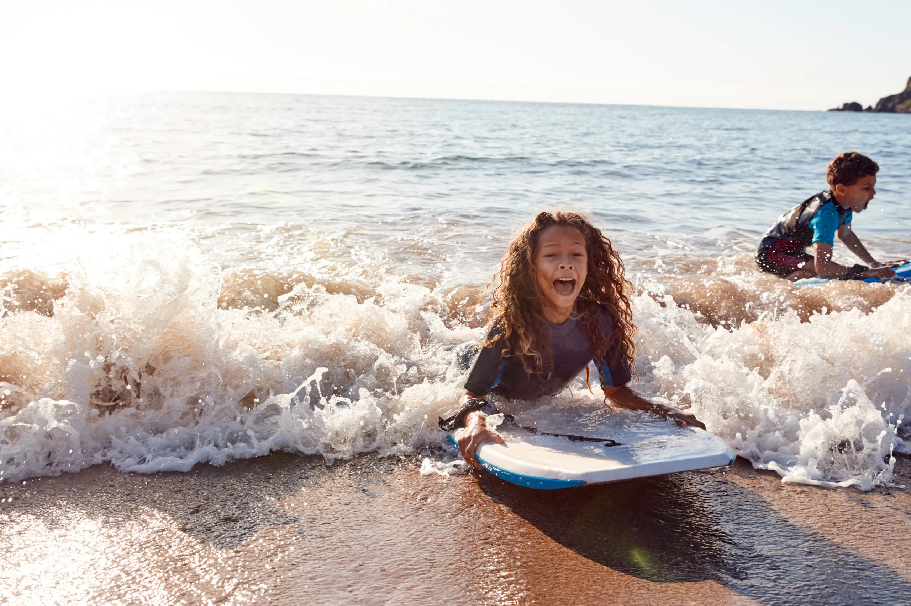

Fun Water Activities to Try This Summer

The days are longer, the sun is shining, and the warm weather has finally arrived. Summer is the perfect time to head out on a vacation and enjoy the nice weather, especially in places where it’s short lived. Many people folk to the water during the summer months in order to stay cool and take part in all the summer fun water activities.
Instead of sitting on the beach or dock watching other people enjoy the water, get out there and join them! If you’re looking for a little adventure or just want to try something new, here’s a list of 15 fun water activities to try this summer .
Canoeing
Canoeing is the quintessential summer activity. It’s so peaceful and a great way to see nature up close. If you’re going camping this summer, consider traveling by canoe between campsites or just having one along for the ride to do some exploring around the campsite. Expert campers might even do some portaging!
Heading to a cottage this summer? Definitely consider taking the canoe out. You can go out alone or with two other people (one person in each seat and another seated in the middle). Take it to go fishing, travel to a neighbors cottage, or just paddle around. You don’t need much expertise for canoeing which makes it perfect for beginners and even little kids. Just don’t forget to wear lifejackets !
Tubing
Another popular water activity in cottage country, tubing! It is so incredibly fun and doesn’t require any skill at all — just laughs! You sit in a tube that is attached to a boat. Get nice and nestled in and hold on tight! Once the boat starts moving it can be hard to hold on, but that’s all part of the fun. The difficulty all depends on the boat driver and their speed. Also whether or not they twist and turn so the tube rides through the boats wake.
You could also use a tube to just float down a lazy river (possibly with a couple little rapids). This really requires no skill and there are some companies who rent tubes and equipment to people who’re looking for a relaxing day floating down the river.
Kayaking
Another very relaxing activity that can be enjoyed by the whole family is kayaking . It’s low impact and quite easy to learn. Kayak is a very narrow boat that can hold either one or two individuals and gains momentum from the individuals inside the kayak who are equipped with a double-ended paddle.
Kayaking is a great way to explore calm bodies of water like rivers, lagoons, lakes, and some coastlines. Thanks to the small size and low height, it’s perfect for venturing into shallow waters that can’t be accessed with a boat or even canoe. It’s also a good workout for the shoulders, arms and back. You’ll also need to engage the core to help keep the kayak balanced.
Stand-Up Paddle Boarding (SUP)
Stand-up paddle boarding, also referred to as SUP, has become very popular in the past couple years . This laid-back water sport is a great activity that can be done in pretty much any body of water — lakes, ocean, bay, and even rivers. While the board looks very similar to a surf board, it’s much larger in size. We love this activity because it’s fun for most ages, all fitness levels, and offers a good workout. You’ll need strong arms and an engaged core to maintain balance.
To do SUP, stand in the middle of the board and use the tall oar to paddle around. Home & Jet recommends not attempting this for the first time in an ocean because the current and waves will make it a lot more difficult. Start out in calmer waters like a lake or river. You can always head into the ocean for a bigger challenge.
Fishing
There’s nothing more relaxing than sitting in the quiet silence of nature, waiting for the fish to bite. Fishing is a classic summer activity that is fun for the whole family. You can get the kids involved and even have them hold their own fishing rods – which they will love! Or it could be a great solo activity. Something to do to get some quiet time and relax.
Like some of the other activities on this list, most people can fish no matter where they are. All they need is a body of water, big or small. It can be done in the ocean, river, lake, creek, or even a small pond.
Bodyboarding
Bodyboarding is the perfect water activity for beginners, particularly kids . It’s sometimes referred to as boogie boarding. You can make this activity as hard or adventurous as you’d like. It all depends on the body of water, size of waves, and how deep you go.
This water activity is a great stepping stone for people who are interested in getting into surfing. It’s a good place to start to get familiar with the ocean and get your feet wet, literally and figuratively!
Waterskiing
Waterskiing is not only exhilarating and fun, it’s also a total body workout . You’ll need strong arms to hold onto the rope that’s being pulled by a boat, strong legs to stay standing, and then an engaged core to maintain balance.
You don’t have to be a skier to be able to waterski. While they have the same name, they are totally different skills! For those who are brave enough to try, start by squatting the water. Tuck your knees close to your chest and keep the skis out front. The farther your knees are from your chest, the harder it will be to get up. According to KOA.com , holding that crouched position will allow you to pop out of the water more quickly.
Flyboarding
As long as you’re not afraid of heights, flyboarding is a great water activity to try! Flyboarding is a relatively new activity, especially compared to all the others on this list. It uses high-powered thrust to get a person high up out of the water. People can get as high as 80-feet out of the water, says Home & Jet.
A guide will help fasten you into a pair of boost attached to a hose. The hose is then attached to some kind of watercraft, likely a jet ski. Whatever the watercraft is, it will be responsible for providing the thrust that will get you high into the air. The source notes that while it looks very intimidating, it’s actually not that hard to learn.
Wakeboarding
Not a fan of waterskiing? Give wakeboarding a try! KOA.com writes that it’s actually easier than waterskiing because the board has a much greater surface area, so it’s easier to stand up. Similar to waterskiing, start with the board out front and feet at equal heights. When the boat starts to move, you’ll naturally swivel so that your leading leg goes forward.
Wakeboarding can be super fun once a person gets the hang of it. You’ll be able to jump in the boats wake and for those who are really experienced, even do some cool spins and flips! “A wakeboard has a great amount of ‘pop’ to it,” writes the source. “…as you ride up the slope of the wake, it naturally wants to hold and release the tension, giving you as much air as you’re willing to try for.”
Hydrofoil
Hydrofoil looks like something plucked right out of the future! It’s very similar to surfing but the board comes with a foil attached to the bottom, allowing it to lift out and above the water. According to Home & Jet, hydrofoil works by utilizing the waves kinetic energy. It can be a very exhilarating activity as it makes people feel like they’re flying, especially when they reach super high speeds.
For people who don’t have access to the ocean, there are boards that come with an electric motor attached so that they can still work in calmer waters like lakes and bays. The engine gives the board what it needs to lift out of the water. The source recommends people try their hand at surfing first because while it’t a lot of fun, it does require some skill and carries a bit of risk.
Sailing
Not many people can say they’ve sailed a boat before because they are as accessible as the other boats on this list. But it doesn’t have to be a huge sailboat. There are lots of small catamarans made of two pontoons with mesh in between. Thanks to its small size and big sail, sailboats are able to quickly zip across the water when the wind hits their sails.
You can likely find some sailboat rentals which would be a great water activity for the family! You might need to take a lesson beforehand because it’s a bit more complex than other small boats. But once you’ve learned, it’s a great skill to have and enjoy.
Jet Skiing
It’s been called the motorcycle of the water and we can definitely see why! People love riding around on jet skis in the water mainly because of their speed. KOA.com warns jet skis can feel twice as fast thanks to the water. They are quick and easy, suitable for one or two riders.
Some states require a license to drive a jet ski so be sure to do some research ahead of time. But if possible, jet skiing can be a really fun activity on the water. People who are more comfortable on a jet ski can jump waves, make sharp turns, stop for spontaneous swims, and explore waters that aren’t accessible by boat. Jet skis rentals are fairly common and readily available in most places near water.
Windsurfing
Not surprisingly, you’ll need some wind to do this water activity! Windsurfing works by harnessing the power of the wind. This sport is basically a combination of surfing and sailing since it’s a board with a small sail attached. You stand up on the board and use the wind to gain movement. People who are more advanced in this activity will be harnessed to the sail.
While it’s common to see in the ocean, it can be done in rivers, lakes, and bays. As long as there are suitable wind conditions, this activity can be done. You’ll likely need a lesson or two in order to get the hang of it. This will help avoid injury and learn how to handle the sail. Home & Jet advises only confident swimmers try this water activity as it can be risky and does require a higher fitness level.
White Water Rafting
Depending on the location, white water rafting is definitely not for the faint of heart! Do research ahead of time and find a place that offers what you’re looking for. You can find places where this activity is family-friendly or even for people who aren’t looking for anything too adventurous. The same goes for the opposite end of the spectrum — thrill seekers can surely satisfy their itch with white water rafting.
Unlike some of the other activities on this list, white water rafting is a guided experience that requires expertise, not only for the proper equipment but also for safety reasons. It’s a great way activity for bonding, teamwork, and of course, an overall good time! Definitely check this activity out if headed out on vacation near the mountains or some rapids this summer.
Surfing
Obviously this water activity is limited to people who have access to the ocean, but for those who do, it’s a great sport to try! Anyone vacationing near the ocean should look for local companies that rent surfboards and offer lessons.
It’s important to note that this activity does carry some risk and certain areas, reef points and beach breaks suit different levels of skill and experience. Be sure to talk to a local expert about the safest way to attempt surfing.
Source: https://activebeat.com/fitness/fun-water-activities-to-try-this-summer/